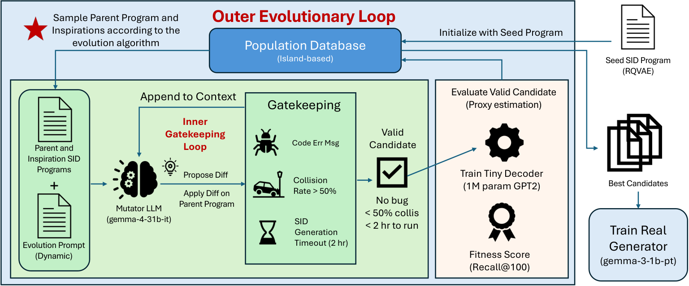
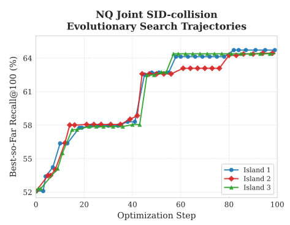
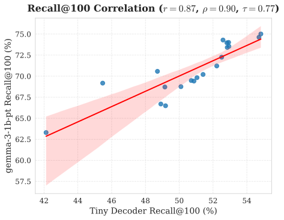

目录 · 6 节
1问题与动机：编号本身就是检索的一部分2方法：大模型改代码，小模型给反馈3核心贡献：一起学习语义分组和冲突后缀4实验结果：改索引有收益，放开所有组件反而危险5局限：代理有效的范围需要单独校准6工业实践意义：把可优化的部分收窄用小模型快速评估大模型改写的编码程序，可以让生成式检索找到更好的文档索引。论文关心的不是生成器还能扩大多少，而是它正在学习的文档编号是否合适。作者固定最终模型及训练方法，把搜索重点放在编号的构造规则上。实验也暴露出一条边界：小模型挑中的索引通常能迁移，挑中的训练目标却可能让大模型退步。
1. 问题与动机：编号本身就是检索的一部分
生成式检索会根据查询逐个生成文档编号。Semantic ID，就是从文档内容得到的一串短编码；开头相同的文档共享生成路径。模型一旦在前面选错分支，正确文档就可能被提前剪掉，后面再强也找不回来。
常见做法先把文档变成向量，再分层量化。量化可以理解为用少量代表向量给文档分组。不同文档仍可能拿到相同编码，需要另加一个后缀区分。这两件事互相牵连：分组规则改变了，重码文档也变了，后缀规则的作用就跟着变。
只看向量重建得像不像，或者编码分布是否均匀，不能直接判断检索是否好用。随机编号也能减少冲突，却没有可学习的语义结构。真正可靠的检验是训练生成器再测召回，但每改一次索引都这样做，成本太高。作者因此寻找一个便宜的替身，专门给候选索引排顺序。
2. 方法：大模型改代码，小模型给反馈
整个系统分成外层搜索与内层检查。外层保存候选程序，选父代，再把代码和评估反馈交给本地开源大模型。大模型只修改允许变化的区域。内层执行新程序，检查输出和编码冲突，合格后才训练小型生成器。程序报错时，系统把错误交回去修订。

候选程序的接口保持固定：读入文档向量、查询向量及训练相关性标签，输出按文档顺序对齐的整数编码。固定接口保证不同方案可以比较，但内部既能改量化，也能改聚类与初始化。最终生成器只读查询文本，学习输出这些编号。
代理生成器约有一百万个非词 embedding 参数，负责检验编号能否被学会。作者把原始训练相关性对拆为两份，一份训练，一份给搜索反馈；保留的测试查询始终不让搜索过程接触。拆分单位是查询与文档的配对，因此同一个多答案查询可能出现在两边。这一点与严格按查询拆分不同，读实验时需要留意。
目标模型与代理的区别，在于后者只承担廉价筛选。搜索结束后，按代理分数取最好的程序，用全部原始训练配对重新生成索引，再训练十亿参数目标生成器。公开数据的最终阶段额外加入合成查询，电商数据不加。代理相关性校准实验没有使用这些合成查询，不能把两组绝对分数混在一起比较。
评估一次代理约需二十分钟，目标模型约需五小时。这是单次评估的时间对比，并不包含大模型改代码、索引构造和失败重试的全部成本。
3. 核心贡献：一起学习语义分组和冲突后缀
NQ 上胜出的程序保留了分层量化框架，没有换成全新的生成器。一个变化是按向量方向选择编码，再减去保留长度信息的码本向量。选择看方向，更新残差仍保留幅度，这两步并不相同。
另一个变化是把查询意图放进索引训练。对每个文档，程序汇总相关查询的向量，要求重建后的文档表示也靠近这些查询。这样编号不只保存“文档写了什么”，也考虑“用户会怎么找它”。这一点对表述零散、查询很短的内容检索尤其有启发，但论文实验来自问答检索与电商，不是社区 UGC 线上测试。
后缀也从无语义的编号变成几何位置。没有冲突的文档统一用零；发生冲突的文档按它们离组内中心的方向相似度排序。于是较小后缀在不同分组中有了相近含义，而不是仅取决于文档在表里的顺序。作者还扩大码本并加入训练稳定措施，所以收益不能只归因于某一个小改动。

4. 实验结果：改索引有收益，放开所有组件反而危险
下表保留最能说明边界的结果。指标都是 NQ320K 的目标模型前百条召回率；提升一列是绝对百分点，不能读成相对百分比。
| 搜索范围 | 目标 R@100 | 相对种子变化 |
|---|---|---|
| 原始种子 | 85.82% | — |
| 仅修改 Semantic ID | 87.40% | +1.58 |
| 联合修改 ID 与冲突处理 | 90.57% | +4.75 |
| 修改生成器训练目标 | 84.46% | −1.36 |
| 修改完整流水线 | 76.12% | −9.70 |
联合改索引把 NQ 的前百条召回率提高了 4.75 个百分点。MSMARCO 与私有多语电商数据也有改善，不过电商的早期位置收益仍在一个标准差内。论文并未证明生成式检索整体优于稠密检索或词项检索：MSMARCO 的较大召回截断位置和排序指标，仍有 BM25 更强的情况。

单独校准的索引候选中，代理与目标召回率的排序相关系数达到 0.90。这里不要求小模型预测大模型的绝对分数，只要求它大致选对方向。
但允许改训练目标后，代理更高的方案可以在目标模型上更差。目标函数影响“怎么学”，它与模型容量、预训练和训练方法紧密相连；索引则主要改变两者共享的“学什么”。作者观察到的负向排序样本只有五个，足以提示失败模式，却不适合做强统计断言。
5. 局限：代理有效的范围需要单独校准
作者明确不主张达到生成式检索最优成绩，也不主张替代所有检索范式。对不同搜索范围，实验起点、搜索预算和候选约束不同，因此联合搜索领先顺序搜索，并不是一个只改变“是否联合优化”的严格消融。多个设计同时变化，也难把贡献拆到每个细节。
私有电商数据隐藏了绝对成绩，只公布相对 BM25 的绝对增益。它提供真实数据规模的证据，但没有线上 A/B 结果。购买标签也不等同于问答相关性，更不等同于社区内容满意度。
小代理节省的是候选评估成本，最终仍需要训练目标模型来验收。搜索还有失败程序和索引构建开销；文中估算的评估加速不能当成整条流水线的等比例加速。索引重建后的新文档接入、存量编号迁移，也没有在这组实验中解决。
6. 工业实践意义：把可优化的部分收窄
已经有生成式召回系统的团队，可以固定文本编码器、生成器和训练样本，只比较几种索引程序。记录的不只是重码率，还应包括小代理和目标模型对同一批程序的排序是否一致。用少量配对实验确认这种一致性，才知道便宜反馈是否值得继续使用。
针对社区短文本，一个具体可试的改动是用真实查询与点击文档配对辅助构造编码，检查它是否比只按文本聚类更符合用户找内容的方式。这个实验对应论文中“把查询意图放进索引”的设计；点击偏差和短文本噪声则需要在数据准备中单独处理。
另一项可独立检查的是冲突后缀：如果后缀只是数据库顺序，它可能让生成器学习无意义差别。把后缀与组内语义位置联系起来，有机会让最后一步也可学习。这里最值得带走的做法，是让自动搜索围绕共享索引结构展开，并用目标模型的真实检索结果约束它。
读完这篇，你觉得
夜读鸮记下了，谢谢你的反馈。
点一下即可，无需登录；再点一次撤回。只统计匿名次数，不记录你是谁。
讨论
欢迎补充实验细节、复现经验或不同看法。需 GitHub 登录。
正在加载讨论…